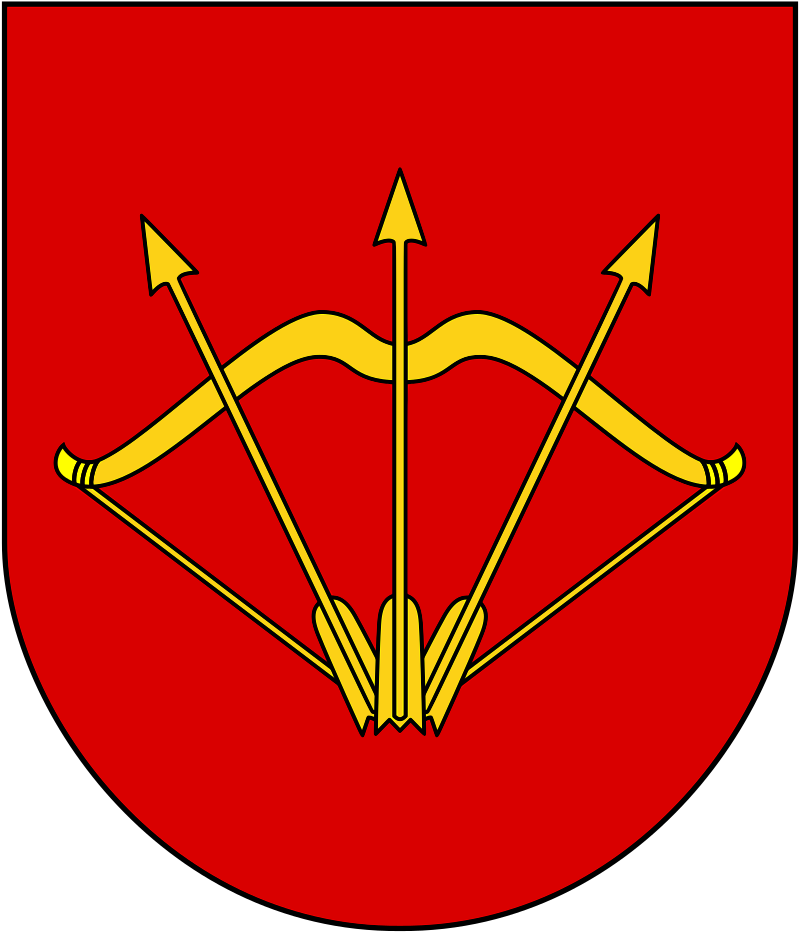

Visitez l'oblast de Kiev - Bila Tserkva
Visitez l'oblast de Kiev - Bila Tserkva

Héraldique
Drapeau
la description de la ville
Bila Tserkva est une ville de l'oblast de Kiev, en Ukraine, et le centre administratif du raïon de Bila Tserkva. Sa population s'élevait à 208 737 habitants en 2021.
Bila Tserkva est située sur la rivière Ros, un affluent du Dniepr, à 78 km au sud-sud-ouest de Kiev.
Les endroits à visiter
- Église Saint-Jean-Baptiste de Bila Tserkva
- Palais d'hiver Branicki
- Parc de la Gloire classé


Gallerie